전시 보러 갈래? - 이하령, 재훈, 황아림과 함께 2
<4. 쟤네들은 2000년대 팝음악에 맞춰 폴댄스를 춰 (좀 멋진 걸?)
5. 별사탕이 피는 나무 아래서
6. 아트 선재 어선
4. 쟤네들은 2000년대 팝음악에 맞춰 폴댄스를 춰 (좀 멋진 걸?)
재훈: 혹시 문상훈 작가의 사진 작업 <손> 어떻게 보셨어요?

사진: 남서원. 제공: 아트선재센터. 2025
ⓒ Art Sonje Center

ⓒ 문상훈
황아림: 작업이 연작이라서 계속 다른 커플들이 추가되는 걸로 알고 있어요. 그 점이 되게 재밌었고, 보다 보니까 다들 손이 참 예쁘더라고요. 아마 대부분이 부치 손인 것 같은데, 정말 멋있다고 느꼈어요.
재훈: 저는 그 작업을 미술 아카이브에서 열린 전시 《우리는 끊임없이 다른 강에 스며든다》에서 처음 봤어요. 그 전시의 기획은 아카이브 기반의 미술이 공공 기록의 사각지대에 있는 역사를 어떻게 기록해왔는지 살펴보는 것이었고, <손>은 성 소수자 인권 운동 섹션에 배치되어 있었는데요. 작품을 처음 봤을 때 되게 미미하다고 생각했어요. 어느 쪽으로나 정보량이 많은 작업은 아니라 조금 아쉽기도 했고요.
근데 같은 작업이 이 전시에 걸리니까 사뭇 다른 맥락으로 읽히더라고요. 액자 안에 사진이 있고 그 손의 주인인 레즈비언 연인의 이름이 적혀 있잖아요. 그게 앞서 말했던 <다크 인덱스>의 제목에 나온 사람들 이름처럼, 전시의 일부 참여자들로 위시되는 여성퀴어 커뮤니티의 존재를 다시 떠올리게 했어요. 아림님께서 이야기해주신 것처럼 퀴어 친구들 사이 놀이의 연장으로서 느껴지기도 하고요.
황아림: 저는 그 점에서 장영해 작가의 영상 작업 (이하

사진: 남서원. 제공: 아트선재센터. 2025
ⓒ Art Sonje Center

ⓒ 장영해
재훈: 아오노군.
황아림: 네, 작업에 만화 『아오노 군에게 닿고 싶으니까 죽고 싶어』(이하 『아오노군』)가 나오더라고요. 제 친구들이 『아오노군』 진짜 좋아하거든요. 영상에서 퍼포머가 클라이밍 기구에 매달려 『아오노군』을 낭독하는데 거기서 “내 손이 네 손이 될게” 이런 뉘앙스의 대사가 있었던 걸로 기억하거든요? 그 대사를 들은 후에 문상훈의 <손>을 보니 다르게 다가오더라고요.
재훈: 그걸 그렇게 연결해서 보셨구나, 이거 의도한 거면 엄청난 기획인데요? (웃음)
황아림: 그렇게도 보이더라고요. 그냥 우연이겠지만.
재훈: 제가 아는 여자 퀴어들도 다 『아오노군』 알던데, 왜 다들 그렇게 좋아하는 거죠?
황아림: 다들 귀신이랑 *멘헤라 **BPD 좋아해서
(출처: 페미위키)
**BPD: 경계선 성격 장애
재훈: 영상 작업

사진 제공: 장영해
ⓒ 장영해
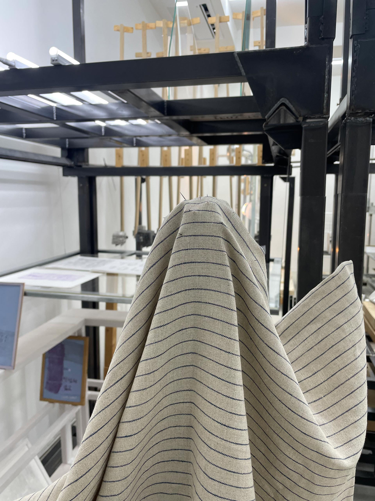 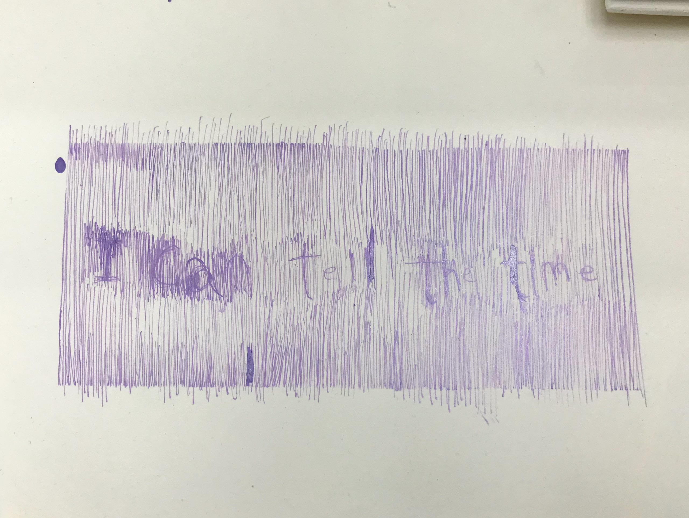
정서영: 맞아요. 그 선인장의 제목은 ‘Mr. Kim’ 이에요. 앞에 서 있기에 딱 좋지.
시원: 김씨라 앞에 있는 거군요.
정서영: 김씨가 서 있는 거야. (웃음)
동현: 그리고 저는 구조물의 겹침을 주의 깊게 봤었어요. 팔레트가 툭툭툭 쌓여있는 것을 넘어서 구조물이 구조물 사이로 들어가고, 그 구조물이 철봉이 되어 아크릴판이 구조물 중앙에 걸려 공중에 떠 있고, 그 위로 구조물이 쌓여 있는데 그 안으로 다른 파이프가 끼어 들어가 있고… 이런 식으로 끼워지고 겹쳐지면서 구조가 만들어져 있는데, 그 ‘겹침’에서 이 작가가 이 구조물이 일어나는 장면을 보기 위해 계속 보고 있었다는 게 선명히 느껴졌어요.
정서영: 이주요 작가가 전시 설치를 할 때 종종 끝을 내지 않는 이유가 원하는 장면을 얻어낼 때까지 계속하면서, 찾고 있기 때문에 그렇죠.
재훈: 원하는 장면.
정서영: 근데 그게 어떤 완성된 상이 머릿속에 처음부터 있는 게 아니고 찾아가는 과정인 거잖아요. 그렇기에 계속하게 되고 그것에 다다랐다는 것을 알 때까지 움직이게 되는 거죠. 그러다 보면 모든 게 어떤 의미에서는 움직이는 것처럼 보이는데, 그렇게 원하는 장면을 찾아가는 과정이 앞서 말했던 ‘관절이 다 보이는 것 같다’ 라는 말이나, ‘여기서 저기까지 움직였는데 잔상은 여전히 남아 있는 것 같다’ 는 감상, ‘투명하게 겹쳐있다'는 표현과 다 같은 선상에 있는 이야기에요.
실제로 또 그런 겹침들은 그냥 오브제들이 겹쳐 있다기보다 여러 겹의 시선과 시간이 겹쳐 있는 거니까요. 아까 얘기했던 재료와 재료, 현상과 현상, 사물과 사물이나, 내 마음과 저 마음. 이런 부분들이 겹칠 때에는 반드시 어떤 갈등과 저항이 발생하는데, 그것을 ‘어떤 문제로 삼을 것이냐’에 있어서 작가마다 너무 큰 차이가 있고, 이주요 작가는 그 부딪히는 분절 지점을 어떻게 대하느냐라는 게 참 잘 보이는 작가라고 생각해요.
그래서 아까 얘기했듯이 어떤 작가는 갈등이 마치 없었던 것처럼 보이도록 자기의 조건을 조정하고, 아니면 그것을 극복하여 얻어낸 강력한 승리의 표상으로서 작가, 작품을 전면에 세우기도 하죠. 아니면 취약함을 더욱더 강조하거나. 작가들은 자기가 걸어온 길을 과장하는 게 대부분인 것 같아요. 더 잘 보이게 하기 위해서. 조금 더 선명한 입장을 표명하기를 원하잖아요. 근데 그 선명함이라고 하는 것이 등장하는 방법도 참으로 여러 가지인데 그게 좀 단순화되긴 한 것 같아요.
한 때 이주요 작가의 작업을 설명하는 대표 언어가 이른바 ‘Vulnerability’ 아니었어요? ‘이주요의 작업은 연약함과 취약함을 선명하게 드러내고, 그러기 위한 내러티브를 이끌어내며, 오브제가 그 내러티브를 구체화한다’ 는 식의 얘기들을 많이 했었잖아요.
근데 그런 얘기를 표제어로써만 생각하고 나면 우리는 어떤 교집합의 이미지를 생각하지 않나요? 그런 연약함, 취약함이라는 단어를 두고 봤을 때 떠올려지는 어떤 동일한 이미지가 있잖아요. 대개는 그런 이미지를 더욱더 과장하기도 하고요. 근데 나는 그 작가의 대표 언어가 자꾸 반복되는 현상은 별로 좋지 않다고 생각하거든요. 그것보다는 지금 우리가 나눴던 대화처럼 자세히 들여다본 얘기를 계속하는 거죠. ‘실제로 뭘 했는가’ 하는 그 내용 자체를 계속 이야기하는 게 그 작가의 주제어를 그저 반복해서 발음하는 것보다 더 재밌어요.
재훈: 자신이 원하는 장면을 찾기 위해서 계속해서 시도하는 근성이나, 작품이라는 결론에 이르는 과정에서의 관절, 관절을 그대로 보여주는 특징을 저는 1층의 <페인팅 플레이트>에 있던 편지 그림 <Dear my love, anti-capitalist> 에서 느낄 수 있었어요.
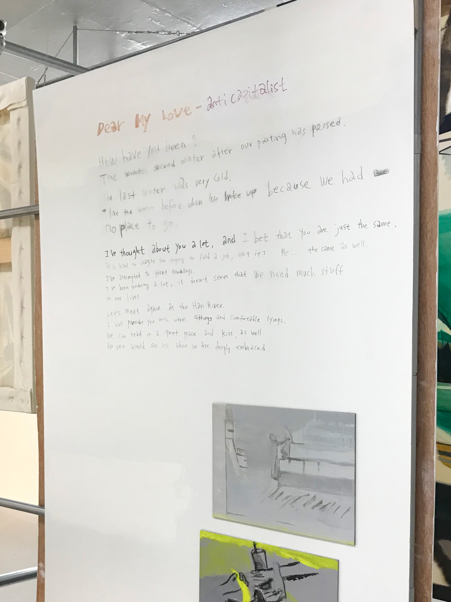
그 그림에서 글씨를 적은 방식을 보면, 일반적인 방식처럼 글씨를 그냥 한 번 쓰고 넘긴 것도 있는데요. 자세히 보다 보면 (1) 검은색으로 한 번 쓰고 (2) 그 글씨는 흩뿌옇게 칠한 뒤 (3) 그 위에 빨간색으로 다시 쓴 부분도 있고
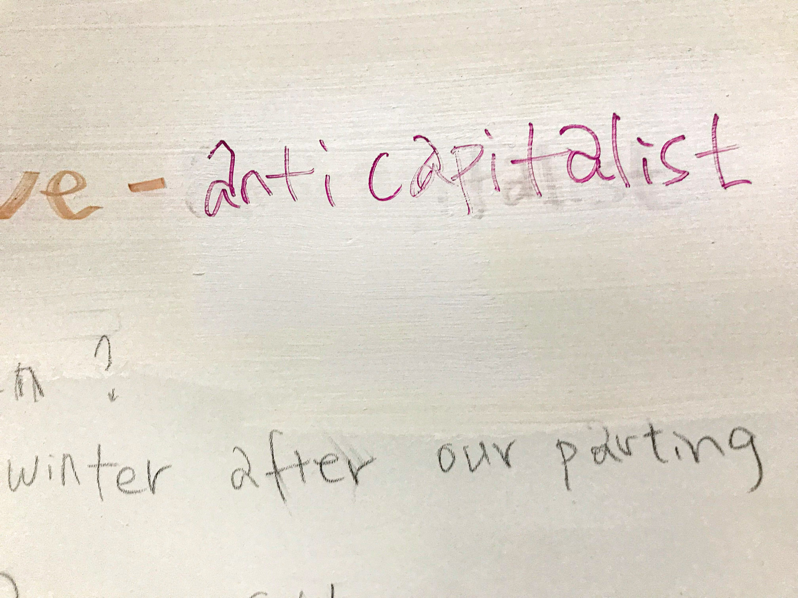
(1) 글자를 쓰고 (2) 페인트로 한 번 밀거나 줄을 그어 처음 썼던 글자의 작동을 중지시킨 다음에 (3) 다시 또 한 번 쓴 게 있는데, 그 페인트의 흔적을 삭제하지 않았더라고요. 캔버스의 색과는 다른 페인트의 색이 흔적으로서 그대로 다 보이게 놔뒀는데 저는 이 방식이 이주요 작가의 언어라고 느꼈어요.
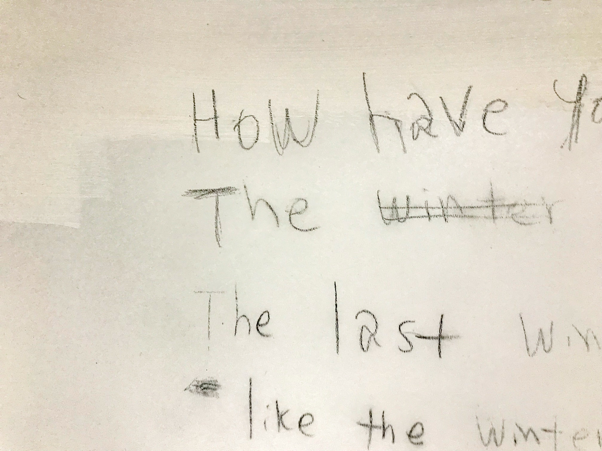
그랬을 때 이렇게 본인의 망설임을 보여주는 방식이 본인의 연약함, 취약함을 과장하는 것과 어떤 차이가 있을까요?
정서영: 뭐라고요?
재훈: 아까 ‘과장’이라는 표현을 쓰셨잖아요, 대다수의 작가들이 본인의 특징을 과장해서 보여주고는 한다고.
정서영: 우선 과장을 네거티브하게 이야기한 건 아니에요. 작업을 하다 보면 어떤 경우에는 과장법을 사용해서 자기의 생각을 좀 더 선명하게 드러내려고 하는 경우도 있고, 어떤 경우에는 일부러 흐릿하게 해서 좀 더 나의 생각을 잘 드러내려고 하는 경우도 있고, 더 겸손하게 하거나 하는 등의 여러 가지 방법이 있죠.
재훈의 질문은 ‘그렇다면… 이주요 작가의 경우는?’ 이라고 물어본 건가요?
재훈: 아까 연약함을 과장하는 것과 이주요 작가의 접근은 다르다…
정서영: 이주요 작가의 작업은 ‘이 연약함이 어떻게 의미가 있다’ 라고가 아니라 그냥 그렇다라는 거. ‘그렇다’라는 장면을 보여주는 것으로 여겨져요. 그 안에 있는 자신과 함께. 그런데 그 ‘취약함’ 이라는 단어가 작가가 내세웠던 단어였는지 기억을 잘 못 하겠네요.
재훈: 정확하진 않지만 아마 글쓴이들이 그렇게 많이 한 것 같아요. 2000년대 중후반이나 2010년대 초중반에 쓰인 글들에서 그 단어들을 봤던 기억이 있어요.
정서영: 물론 이주요 작가가 존재가 취약해지는 순간에 대해 굉장히 예민하게 받아들이고, 그것을 서포트하고, 끌어올리는 것을 중요하게 생각하는 작가는 맞아요. 작가가 작업 속에서 풀어놓았던 내러티브들에도 존재가 취약해지는 순간에 대한 이야기들이 많이 있고요. 근데 그런 지점이 표제어가 될 수 있는지는 난 잘 모르겠어요. 그것이 표제어가 되는 순간 나는 그게 사물화돼버린다고 느끼거든요. 이건 굉장히 오래된 인류의 문제인데, 그런 사물화된 이야기들은 어떤 순간에 발견되기도 하고 닫히기도 하고 그러잖아요.
근데 그게 반복되어서 작가의 표제어가 되면 마치 ‘취약함이 물건인가? 뭐, 취약함이라는 물건이 있나?’ 이런 생각이 들기 마련인데요. 그렇게 되다 보면 이제 그 작가는 취약함이라는 걸 손에 딱 쥐게 되는 거죠. 많은 경우에 작가들이 그런 표제어를 손에 쥐려고 한다는 얘기였어요. ‘과장한다’는 표현은 그런 뜻이에요. 근데 글쎄.. 나는 그럴 때 약간 생경함을 느끼거든요. 그래서 ‘그것 좀 손에서 놨으면..’ 이런 생각이 들 때가 있어요.
그게 작가들이 스스로 하는 일일 때도 있고, 또 글쓴이들이 그렇게 만드는 경우도 있고 뭐 등등의 경우들이 있어요. 어찌 됐든 이주요 작가가 쌈지 레지던시에서 만들었던 좀 엉성해 보이는 그런 오브제들이 어떤 분명하고 구체적인 문제로부터 시작됐고, 그것은 분명히 어떤 방식으로든 무언가를 만들려고 했던 노력인데 나는 이 사람이 그 노력을 통해 어떤 솔루션으로 향하고 있다고 생각하지 않았고 이 문제와 동행한다고 생각했어요.
그래서 그 오브제가 막 옆으로 쓰러져도 상관없고 재밌었고 그렇죠. 정말 내 문제를 해결해 줄 가습기를 만들어주는 게 별로 중요한 문제로 생각되지 않았거든요. 이주요의 작품 활동이 내 방에 들어왔다 나갔다 하는 활력있는 생활이 좋은 거죠. 정리하자면 그 ‘취약함’이라는 단어로 명명되는 어떤 현상이 있다면, 이주요는 그것을 사물화해서 손에 쥔 게 아니고 그 현상과 계속해서 동행했다는 것이죠. 그것을 내러티브로 만든 것이 아니라 그걸 본 거고, 자기가 자기의 존재를 그 안에서 찾았던 거고, 그래서 그 현상을 에너지로 바꿔 수면 위로 끌고 올라왔던 거에요.
과장한다는 것은 굉장히 많은 인위적 가공이 필요하잖아요. 근데 그것은 또 예술의 중요한 방법 중에 하나예요. 그 방법을 통해서 굉장히 훌륭한 작업이 나오기도 하니까요. 근데 그런 의미가 아니고, 표제어가 되면서 자기의 생각이 사물화되고, 오히려 자기의 생각인데 타자화되는 경우들을 많이 보기 때문에 이주요가 다루는 문제는 그런 것이라기보다 ‘작가가 있는 장소와 작가의 문제가 항상 동행하고 있었다’ 라는 것. <Warming And Humidifying> 에 대한 이야기 역시 내가 이 내용에 대해서 처음 경험했던 지점이었다고 말하고 싶었어요.
재훈: 딱 ‘문제와 동행한다’ 는 표현을 듣고서 많은 게 이해가 되었어요. 문제 해결하려면 진짜 가습기 사주면 되잖아요.
정서영: 그러니까 어차피 예술은 솔루션이 안 되잖아요. 뭘 하던지 사실은 그걸 목표로 하고 있지는 않잖아요. 계속 문제를 다루고 있을 뿐인 거죠. 긴급한 문제들을 다루고, 접근하고 그러면서 뭘 하고 있을 뿐이죠. 물론 해결을 목표로 하는 커뮤니티도 있지만 그 경우도 완전한 해결 자체라기보다는 그 과정에 어떻게 투입되는가가 더 중요하기도 하잖아요.
7. Love Your Depot에서의 금속 & 현대미술의 축소
정서영: 그리고 웃기는 얘기지만 《럽유디_강남 파빌리온》에서 봤을 때의 금속물과 바라캇에서 봤을 때의 금속물이 나는 참 다르게 느껴지는데 다들 어떻게 느꼈어요?
동현: 금속이요?
정서영: <러브 유어 디포>의 구조물들이 대개 금속이잖아. 수서에 있는 <턴 디포>와 <언더 디포>도 금속으로 이루어진 집이고, 내부의 구조도 금속인데 이번 전시에서도 금속이 많이 보이잖아요. <턴 디포>도 쇳덩어리들이고. 근데 이 갤러리 공간에서는 훨씬 더 무거운 쇳덩어리가 많이 느껴지지 않아요? 껍데기가 없어서 그런 거죠?
동현: 그런 것 같아요. 그리고 수서의 《럽유디_강남 파빌리온》에 있는 <턴 디포> 외관의 껍데기인 금속 판재는 반사판 역할도 하고 있잖아요. 하늘의 빛과 색이 변함에 따라 외관이 반사하는 풍경도 계속 달라지기 때문에 금속의 무게가 가볍게 느껴졌던 것 같아요.
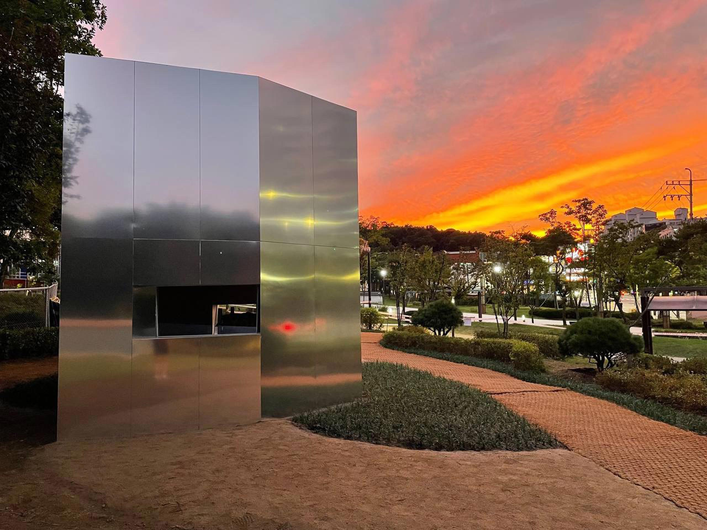
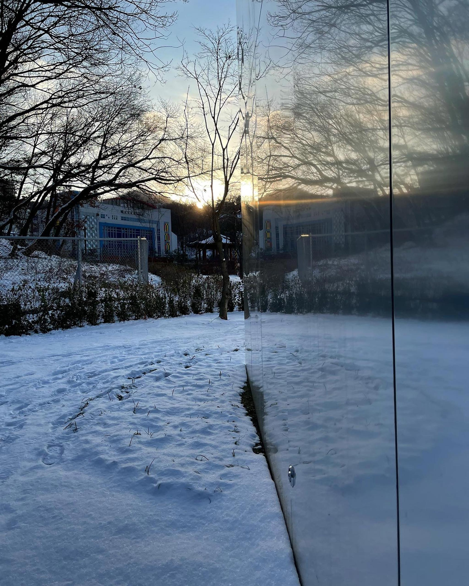
정서영: 《럽유디_강남 파빌리온》에서의 <턴 디포>가 《Of Hundred Carts and On》에서의 <턴 디포>와 크기나 내용물 상 매우 유사한데, 바라캇에서는 금속 외관이 없이 그 속 구조가 딱 떨어져 나와 있잖아요. 바라캇 컨템포러리의 건물이 조금 다른 건물이었으면 또 다르게 느껴지지 않을까 하는 생각도 드네요.
동현: 저도 이 전시가 만약 바라캇 컨템포러리가 지금 건물로 이전하기 이전 건물에서 열렸더라면 또 어땠을까 궁금했어요.
정서영: 맞아. 큰 유리를 통해 건물 밖이 보이는 조건이었다면 느낌이 되게 달랐을 것 같다는 생각이 들어요. 수서 궁마을 공원에 있는 《럽유디_강남 파빌리온》에서는 어두운 저녁 시간 때 주위의 빛이 반사되는 <턴 디포>를 보면 훨씬 더 열린 심리적 공간을 느껴요. 그런 가벼워 보이는 철물 구조 안에서 <턴 디포>의 속 구조를 보는 것과 오래되어 보이는 바라캇 건물 안에 있는 굉장히 밀폐된 지하 공간에서 <턴 디포>의 속 구조를 보는 것은 너무 마음을 다르게 하죠.
재훈: 저는 <턴 디포>가 작동할 때 나는 소리의 차이도 크게 다가왔어요. 이번에는 <턴 디포>에서 되게 둔중한 소리가 났는데 수서에서는 철을 고양이 발톱으로 계속 끄는 듯한 소리가 들려서 둘 다 명상이 되긴 하는데 명상의 종류가 좀 다르달까요? 수서에서 <턴 디포> 안을 혼자 봤을 때에는 아무 생각 하지 않고 내 눈 앞에 있는 장면을 오래 볼 수 있었는데 이번 <턴 디포>의 그 둔중한 소리에 대해서는 음.. 아직 어떻게 말을 해야 될지 잘 모르겠네요.
정서영: 소리는 기술적인 문제 때문에 나타나는 차이니까요. 여기는 밀폐된 공간이고, 훨씬 더 열악한 조건에서 만들어야 했던 기술적인 어려움이 있죠. 그보다는 작업을 보는 사람으로서 전체에서 뭘 보고, 어떤 요소들로 인해 통합적으로 인식이 되는가에 대해서도 이렇게 그런 차이가 있구나 하는 거죠.
동현: 한편 전 두 번째 보니까 관절에 해당하는 부품들에 주목하게 되었어요. 그러니까 ‘이 <페인팅 플레이트>에 캔버스와 나무 판넬을 레일에 걸쳐 고정시키기 위해 어떤 물리적인 힘을 어떻게 사용했는가?’를 보는 재미가 있었어요. 캔버스 틀과 <페인팅 플레이트>의 레일을 고리로 연결한 뒤, 캔버스가 수직을 유지할 수 있도록 고리에 작은 지렛대를 두어 미는 힘이 작용할 수 있도록 설치되어 있더라고요. <드로잉 걸이>에 포함되어 있는 조명의 무게를 지탱하기 위해 설치된 와이어들이 모여있는 모습이나, 앞으로 쓰러지지 않도록 철사를 돌돌 꼬아서 나사처럼 만들어 놓은 것도 재밌었어요. 이런 부품들이 다른 부품과 연결되고, 그 연결들이 모여 집합이 되고, 집합이 모여 전체가 되는 모습이 그려졌던 것 같아요. 작은 부품에서 나온 거대한 전체.
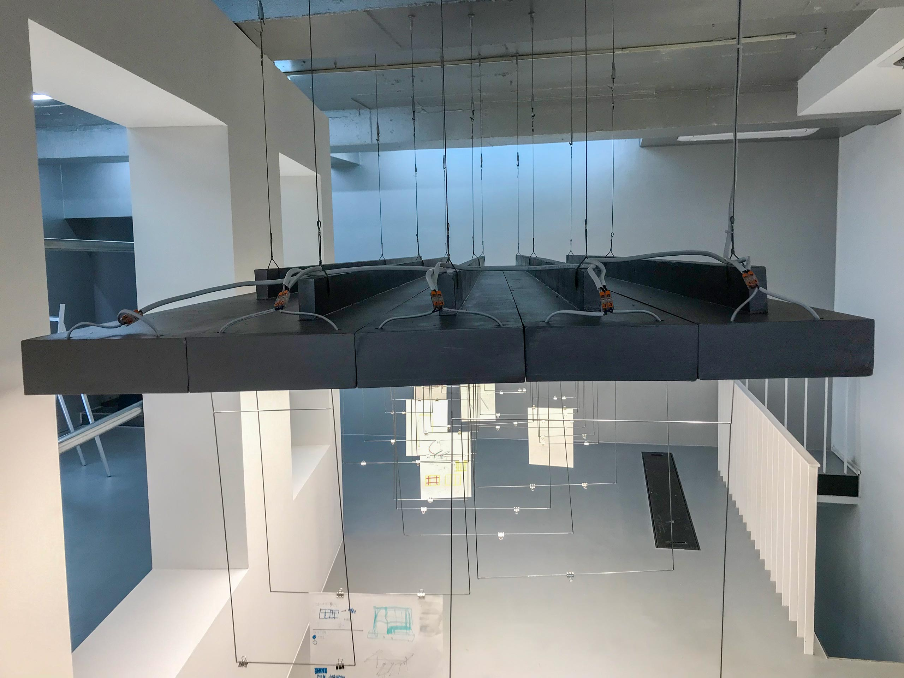
정서영: 그런 것을 못 보는 사람은 못 보는 거예요. 그러니까 야외에 있는 《럽유디_강남 파빌리온》을 볼 때 그 바깥의 공원부터 서서히 눈 속에 담으면서 마침내 <턴 디포> 안의 나사에까지 이르는 경우와 그냥 ‘철로 지어진 집이 있구나!’ 와 함께 바로 그 안으로 눈을 들이대는 경우가 있기도 하고 그렇죠. 하여튼 이전의 ‘디포’ 에서는 기획과 컨셉이 더 강조됐다면, 이번 작업에서는 그 컨셉이 좀 희석되면서 그동안 축적된 세세한 시선들을 다 써본 것 같은 그런 생각도 드네요.
재훈: 나사못까지 보려 하는 눈 있잖아요. 그런 마감재 하나하나가 작가의 미적 선택이라는 사실, 그것이 관객으로서 하나의 볼거리라는 점을 저는 미술대학에서 수업을 들어서야 알 수 있었거든요? 저도 일반 관객 중 하나로서 ‘현대미술 전시에서 도대체 뭘 봐야 하는 거지?’ 라는 땀 삐질삐질 시기를 거쳤고 지금도 막 통달하고 그러지는 않았어요. ‘열심히 봐야 된다' 는 말을 오랫동안 기억하려 했기 때문에 지금에서야 ‘아, 맞아. 마감재나 접합 방식 역시 작품을 구성하는 요소지.’ 라는 생각을 할 수 있었지, 그런 말을 접할 기회가 아예 없었으면 ‘과연 내가 그 디테일들을 볼거리라고 여기며 감탄이나 아쉬움을 느낄 수 있었을까? 자세히 보는 성향을 가진 사람이기만 했어도 가능했을까?’ 하는 생각이 들긴 해요.
정서영: 그런 성향도 중요하겠지만, 성향만의 문제라기보다는 낯선 것들이 계속해서 증가하고 있었던 세상과 점점 감소하고 있는 세상하고의 차이가 있다는 생각이 들어요. 이걸 어떻게 표현을 해야 될까.
김애란의 단편 소설 <침묵의 미래>를 보면, 곧 사라질 언어를 쓰는 마지막 1인들을 마치 동물원처럼 모아놓고 전시하는 ‘소수언어 박물관'이라는 기관이 나와요. 이런 설정처럼 언어들이 점점 사라지는 영역이 있는가 하면, 현대미술은 예술 언어들을 계속 생성하는 영역이었잖아요. 수많은 시도를 함으로써 굉장히 많은 예술 언어를 폭발시키게 했죠. 그런데 나는 이 언어의 다양성이 점차 감소하고 있다고 느껴요. 그래서 단어 몇 개만 들고선 예술을 이해하려는 사람들이 있고.
다양한 외국어와 같은 영역의 말들을 거침없이 주고받는 것처럼, 알아듣는 것처럼, 혹은 알아들으려고 하는 그런 관계가 막 생기는 분위기가 있었던 시절이 점점 쪼그라들어서 지금은 알아듣는 것만 알아듣기로 하는 것 같아요. 그런 식의 세계의 축소를 느끼고는 하죠. 그래서 자세히 보는 것이 성향의 문제이기도 하지만, 언어의 폭발이 주변에서 계속해서 일어나고 있다면 자꾸 보려고 하겠죠. 이제 막 탄생한 외국어에 대해서 이상하게 생각하지 않고 자꾸 보는 체질이 되겠지. 근데 그게 이제 축소되고 있기 때문에 자꾸 자세히 보지 않고 지나가는 거겠죠. 지금의 분위기는요.
재훈: 그런 축소를 보고 계시면 기분이 어떠세요?
정서영: 나는 중간에 걸쳐 있는 사람으로서 양쪽을 경험하고 있는 거잖아요. 다른 걸 경험하고, 늙어버린 다음에 또 다르게 넘어가고 있는 상황에서.. 어떤 탓만 할 수는 없어요. 이렇게 절벽같이 변하는 세상이 왔다고 해서 계속 궁시렁 궁시렁대고 살 수는 없잖아요.
그렇기 때문에 ‘그럼 뭘 하지?’ 이런 생각을 하죠. 이렇게 된 조건 속에서 내가 봤던 좋은 경험, 나에게 어쨌든 예술을 계속하게 했던 좋은 작업들을 떠올려요. 사실 작가는 작품을 보면서 성장하고 작가가 작가를 키우는 거거든요. 어떤 작업을 보고 거기 나타난 놀라운 세상에 깜짝 놀라서 ‘나도 작업을 해야지’ 라든가, ‘나도 저만큼 해야 되는데’ 이런 생각을 하거나 아니면 훌륭해서 신경 쓰이는 동료 작가의 시선에 긴장하기도 하면서 그런 것들을 통해 성장하는 거라서 좋은 또래 작가들이 주변에 있는 것이 되게 중요하다고 생각해요.
이런 젊은 날들의 경험이 있었고 저 역시 그런 경험들을 통해서 성장했다고 생각하는데, 이제 내가 알고 있었던 혹은 긴장했던 환경과 많이 바뀌었다고 해서 남 탓을 하고 살 수도 없는 일이니까요. ‘이토록 바뀌고 낯설어진 조건 속에서 어떻게 내가 여전히 중요하게 생각하는 즐거움, 가치 같은 것을 살아남게 할 건가?’ 하는 이런 고민은 많이 하죠. 너무 호들갑 떨지 않으면서.
이 변화와 실망에 너무 호들갑 떨지는 않고 싶어요. 왜냐하면 이건 나만의 변화가 아니라 세상 사람 모두가 겪는 변화이기 때문에. 그렇지만 남기고 싶은 게 있고, 또 이 안에서 찾고 싶은 게 있어서 조금 속도가 늦어지긴 하죠. 그래서 작업 속도 역시 늦어지긴 해요. 생각 좀 하느라고 늦어지고 천천히 돌아가요. 턴 디포처럼 천천히 돌아요. (웃음)
그래요. 그렇고, 이건 웃자고 하는 말인데 내가 저번에 어떤 외국 언론의 기사를 봤거든요? 학예회 같은 행사를 하면 부모들이 자기 애들 노는 모습을 보러 가잖아요. 다들 그런데 가면 사진 찍잖아. 자기 애 나올 때마다 정신없이 찍느라고 난리를 부리는 내용이었는데요. 댓글에 이런 말이 있더라고요. ‘너의 자식은 너의 눈으로 봐라. 핸드폰으로 보지 말고.’
동현: 요즘엔 전시를 볼 때도 같은 말이 목구멍까지 차오르죠. 특히 관객이 너무 많은 전시를 보러 가면… 이 점에 대해 다들 어떻게 생각하시는지 궁금해요. 리움 미술관만 가더라도 작품 해설이 보편화돼서 웬만한 관객들은 헤드셋을 끼고 전시를 보더라구요. 제가 얼마 전에 김범 작가의 전시를 보러 갔는데요. 그 전시를 보러 가기 전까지만 해도 헤드셋을 끼고 도슨트 사운드를 들으며 작품을 관람하는 일에 대해 부정적으로 생각하고 있었어요. 그런데 김범 전시에선 관객들이 이 도슨트 장치 덕분에 더 즐겁게 보고 있는 게 느껴졌어요.
제가 부정적이라 생각했던 점은 이 장치에 의존해서 작품을 보게 되니까, 내가 볼 수 있는 건 훨씬 많을 수도 있는데, 해설이 들리면 나의 관람의 길이 한 길로만 좁혀지기 쉽겠다는 점이었거든요. 그래서 ‘작품 해설을 들으며 전시를 관람하는 문화가 보편화된 세상이 좋은 세상일까?’ 라는 의문을 가졌었는데, 김범 작가의 전시에서 관객들이 이 장치 덕분에 작품에 관한 이야기를 서로서로 다이렉트로 나누는 걸 보면서 내가 선입견을 갖고 있던 것일지도 모르겠다는 생각을 했었어요.
정서영: 그리고 도슨트라는 프로그램도 많이 발전한 것 같아요. 옛날에는 옆에서 누가 내 작업 도슨트하면 막 도망가면서 ‘하, 살려주세요-!’ 이러기도 했거든요. (웃음) 그래도 요즘에는 ‘현대미술 어렵다 어렵다’ 하니까 미술관마다 연구도 많이 하고 어떻게 대중과 현대미술을 연결할 것인가에 대한 고민도 많이 하고 있죠.
그리고 김범 작가의 작업 같은 경우, 사실 정말 고도의 기술로 쉽게 만들어낸 작업 아니에요? 그래서 그게 너무 왜곡되지 않게 도움이 되는 말로 도슨트 텍스트가 만들어졌을 거라고 생각이 들고 또 그럴 경우에는 도움이 되겠죠. 하지만 지금은 대부분의 관객이 그 프로그램 없이는 접근을 안 하려고 하니까. 요즘은 아예 노력조차 안 하지 않아요?
동현: 네. 그래서 작품이 포토존이 되는 경우도 많이 보죠.
정서영: 그렇기 때문에 미술관에서 어쩔 수 없이 그런 노력들을 울며 겨자 먹기로 하게 된 것이라는 생각도 좀 들고, 실은 나도 굉장히 불편해요. 내 작업의 경우에도 어떤 적절한 말을 찾기가 어렵다 보니까. 누구나 이해하기 쉬운 언어로 전달하기엔 작업 자체에 좀 난감한 부분이 많아요. 대개 작품과 말이 일대일로 딱 등가가 돼야 이해를 하잖아요. 근데 등가가 되게 하려고 노력을 하다 보면 꽤나 겸연쩍은 말들을 선택할 수밖에 없게 되는 게 내 작업의 경우에요, 오싹한 말들을 자꾸 할 수밖에 없게 돼서 차라리 아무 말도 안 하는 게 낫다. 뭐 이렇게 생각을 하긴 하는데 미술관이 예전보다는 대중과의 연결을 많이 생각하다 보니까 도움이 되는 텍스트가 나온다는 생각을 나도 언뜻 해요.
그렇지만 솔직히 해설 텍스트를 들으면서 작품을 보는 것이 난 그렇게 좋지는 않아요. 아까 얘기했듯이 보는 것에 집중을 하면 좋은데 해설 텍스트를 들으면 듣느라고 정신이 없을 테니까요. 이제는 그냥 좀 봤으면 좋겠는데, 대중의 요구는 변함없고 영향력도 강해져 피할 수 없는 문제이긴 하네요.
해설 텍스트는 사실 작품이라는 시각 언어, 피지컬한 언어를 일상 언어로 동시 통역하는 거잖아요. 그런데 그것이 대개의 경우 아주 나쁜 동시 통역사의 말을 듣고 있는 거거든요. 그런 통역을 들을 때 짜증나잖아요. 그런 상황과 비슷할 때가 많아서, 그럴 때는 차라리 그냥 작품을 이루고 있는 것들을 하나하나 차분히 볼 수 있게만 해줘도 좋겠다. 난 차라리 그게 낫다. 이게 무엇인지에 대해서는 모르고 가더라도 뭘 봤는지 잔상만이라도 남고 가는 게 차라리 낫다고 생각해요.
재훈: 전시에서 작품을 보는 경험은 평소에 사람을 만나는 일과 비슷하다고 느껴요. ‘이 사람이 전에는 이런 사람인 줄 알았는데 오늘과 같은 상황에서는 이런 행동을 하네?’ 이런 새로운 발견을 하거나 ‘같은 작품이더라도 다른 각도, 다른 전시에서 보니까 또 이렇게 보이네?’ 와 같은 만남이라고 생각하는데요. 그러한 내밀한 발견, 예술 작품으로 인해 내가 겪은 상태를 나누는 일이 뭐랄까.. 힘을 가질 수 있는 종류의 시선인지는 모르겠어요.
가령 어떤 작품이나 전시에 대해 특정 주제어로 설명을 듣거나 대화를 나눴을 때, 하루 일과를 다 끝내고 나서 뿌듯함이나 시원함을 느끼는 것처럼 보람이 있을 거라고 생각하거든요. 그 단어와 작품을 연결지어 이해하는 일이 어떠한 매개도 없이 그 작품에 내가 접속하는 일보다는 익숙하기도 할 테고요.
그런 맥락에서 내가 오늘 너무 좋은 걸 봤을 때, 이 좋은 것에 대해 같이 이야기 나누고 싶어도 이야기할 수 있는 사람을 구하는 일이 무척… 까마득할 때가 많다. 그래서 나 혼자 마지막 언어를 쓰는 1인처럼 어떠한 외로움을 갖기 쉽겠다는 생각을 최근에 했었어요.
정서영: 그렇지는 않을.. 음. 그렇다고 너무 우울해하지도 말고 슬픈 낭만에 빠지지 말고... 아, 근데 그거는 누구나 다 그럴 수 있을 것 같아요. 내가 나는 이 언어의 마지막 1인인데 또 다른 사람은 또 다른 언어의 마지막 1인이라고 생각할 수 있잖아요. 그래서 어찌 됐든 뭐. 응, 외로워요? 그래서?
재훈: 아니요. 그냥 그럴 수 있겠다... 여타 예술 장르에 비해 미술 생활하면서 그러기가 유독 쉽겠다.
정서영: ‘미술 생활’ 참 재밌는 말이네.
동현: 미술 생활..
시원: 미술 생활…
재훈: 최근에 친구들이랑 잡담하다가 각자 전시 보면 무슨 생각하는지 이야기 나눴거든요. 그러다가 혼자 꽂혀서 그 이후에도 계속 생각했었어요.
시원: 저도 그 ‘내밀한 시선이 어떤 힘을 가질 수 있지?’ 라는 고민을 한 적이 있는데요. 저 같은 경우는 어떤 작업을 보곤 명확한 언어로 설명할 수 없는 부분이 느껴질 때, 그것에 대해 다른 사람하고 얘기를 나누고 싶을 때도 있고 아닐 때도 있어요. 저는 작품을 볼 때 명확히 알고 싶지만 파낼 수 없거나 파내고 싶지 않은 헛헛한 부분을 좋아하는데, 그걸 말로 표현하기가 어려울 때가 있어서요.
만약 어떤 작업을 보고 든 생각이 있고 이후에 관련된 비평 글이나 감상문 같은 것을 봤을 때 생기는 앎이 명확한 시원함일 수도 있는 거고, 혹은 불명확한 좋음일 수도 있고 여러 가지가 있지만. 이게 서로 다른 종류인 것인데, 불명확한 좋음이 속도가 느리다 보니 힘을 갖기 어려워서 그런 의문들이 생기는 것 같아요. 그런데 저는 그 내밀함도 명료한 이해와 비슷한 위치에 놓고 보아야 하지 않을까 하는 생각이 있어요. 그리고 내밀함이라는 것도 꽤나 중요해서 배움이 필요한 영역이라는 생각도 드는 것 같아요.
어쨌든 작품에 대한 생각을 혼자서 한 뒤 다른 사람과 대화를 해보면 ‘실오라기 같은 이해가 있었구나. 내가 잘못된, 이상한 생각을 하는 건 아니었구나. 다른 사람들도 비슷한 생각을 하는구나.’ 이런 생각이 들어요. 차이로 인해 부딪히는 경우도 보통 있지만요. 그리고 어떤 대화 상황에서는 그 좋음에 대해 다 말한 것 같아도, 다시 돌아와서 보면 나에게 명확하게 말해줄 수 없는 어떤 부분이 조금 모습을 바꿔서 남아 있는 것 같기도 해요. 강렬한 외로움까진 아니더라도, 홀로 있는 상태에서 가끔 느낄 수 있는 작은 이해가 내밀함에서 생기는 것 같아요.
재훈: 공감해요.
8. “요즘 젊은 친구들은 잘 안 논다면서요?”
시원: 그런데 작가님은 그런 홀로 있는 상태를 그냥 그 자체로 두시는 것 같은 느낌을 받았어요. 홀로 있는 것이 작업을 하면서 잘 유지해야 하고, 중요한 상태라고 생각이 드는데, 작가님이 이전에 쓰신 글이나 조각을 보면 사무치게 외롭다거나, 혹은 그래서 엄청난 슬픔이 있다거나 하는 식으로 크게 만드는 게 아니라 그걸 만드는 과정에서 그걸 쳐다보고 멀리가 아니더라도 그 근처를 돌아가면서 보여주는 느낌이라고 해야 할까요. 살아가면서 겪게 되는 무서움이나 슬픔과 같은 감정들이 없는 게 아니라 그 자리에 분명히 있다는 자그마한 단호함 같은 것을 느끼는데, 작가님은 그런 홀로 있는 상태를 어떻게 생각하시는지 궁금했어요.
정서영: 이제 와서는 새삼스럽지도 않은 그런 상태인 거죠.
시원: 대학 시절이나 청년 작가 시절에는 어떠셨는지 ‘그때도 혼자 있는 순간을 좋아하셨을까?’ 이런 가벼운 궁금증이 있었어요.
정서영: 그 ‘홀로 있다’는 것은 물리적으로 다른 사람들과 같이 있다 없다의 문제를 포함하기도 하지만 그뿐만은 아닌 거죠. 작업 중의 가장 중요한 순간에는 작업과 나만 있는 게 너무 중요하고 (저의 경우) 제일 좋아요. 그리고 ‘대학 생활이 어땠냐’라는 차원에서 물어본다면 대학생활이야, 예전에는 그냥 격렬하게 놀러 다니고, 술 마시며 놀았죠. 사교 생활이 좋았다는 뜻이 아니라, 젊은 친구들에게 늘 말하지만 정말 ‘동료가 중요하다’고, 하나가 됐든 둘이 됐던 또래 집단에서 같이 성장하는 것이 중요하다고 이야기하고 싶어요. 그래서 그들과의 관계 속에서 서로 생각을 주고받는 게 너무 중요해요.
나 역시 나의 또래 집단들이 되게 중요했죠. 그 당시 나의 또래 집단이었던 지금 활동하고 있는 또래의 작가들이 비슷하게 함께 성장해 온 거죠. 그들과 생각을 교환하면서 서로의 작업을 눈여겨보면서 이렇게 온 거에요. 그리고 아마 요즘 젊은 작가들은 어떻게 지내는지 모르겠지만 제가 30대 중후반이었을 때까지는 작가들 간의 교류가 되게 많았어요. 그래서 같이 많이 만나고, 같이 많이 놀고… 철없는 듯이 많이 놀았죠.
동현: 30대 중반에요?
정서영: 그러니까 좀 달라요. 요즘에는 잘 안 논다면서요?
동현: 그래도 소소하게 놀죠.
정서영: 세대가 달라서 그렇기도 하지만 그때는 파티를 많이 하고 술도 굉장히 많이 마셨어요. 쌈지 레지던시에서도 맨날 파티를 하고 좀 유치하게 놀았어요. 옷도 이상하게 입고 놀고, 춤도 추면서 정말 웃기게 놀았던 것 같아요. 지금 남아있는 사진 보면 진짜 별짓을 다 하고 놀은 사진도 있어요. 다들 이거 흑역사로 잘 뒀다가 언젠가 풀어야지 이런 것도 많고요. 젊은 시절이야 그렇게 지냈죠.
근데 작업의 시간은 혼자가 제일 좋으니까, 그리고 나이 들면서는 그런 작업의 시간을 지나서도 혼자 있는 시간이 제일 좋으니까. 제가 주로 망상의 시간을 많이 갖는 사람이라서 혼자만의 시간이 나한테 필요해요. 혼자 있어야 망상이 되잖아요. 혼자인 시간이 갖춰져야 되고, 가능하면 그 시간을 공급해 주려고 노력하죠. 잘 안 될 때가 이제 점점 많아지지만요.
시원: 저는 요즘 학교 다니면서 든 생각이 그 홀로 있음에는 조건이 있고 그걸 맞추는 게 생각보다 쉽지 않다는 생각을 했어요.
동현: 그럼요.
정서영: ‘홀로 있는 시간이 쉽지 않다’라는 건 무슨 뜻이에요? 주변 영향을 많이 받는다는 뜻이에요? 아니면 실제로 혼자 있을 수 있는 공간이 없다는 뜻이에요?
시원: 제가 생각하기에 저한테 혼자 있다는 건 물리적인 혼자 있음도 있지만, 번잡스러운 고민이나, 어려움 같은 것이 어떤 사실일 수 있다고 생각하는 상태인 것 같아요. 예를 들어 과한 감정은 그만큼의 감정이었던 거고, 그렇지만 곧 다른 시간을 그 시간에 같이 겹쳐놓고 싶고, 그럴 수 있다는 마음이 드는 상태요. 그래서 혼자 있는 게 어려울 때도 있지만 좋은 순간도 있고 그런 것 같아요.
주변 영향을 많이 받기도 해서 그런 상태를 만드는 것이 가끔 어렵다고 느껴질 때가 있고, 물리적 공간을 마련하는 것 또한 쉽지 않다는 현실이 겹쳐진 말이었어요. 또 실제 장소에서 변수가 많으면 영향이 있을 수밖에 없는데 그 변수에 과하게 힘들지 않으려면 작업을 할 때 작업실이든 나의 일이든 그걸 자신이 잘 정리해야 하는 것 같아요.
동현: 저는 공용 작업실을 사용 중인데요. 보통 아침에 작업실을 나가요. 저는 그 시간이 제일 작업하는 데 집중이 잘 되거든요. 뭔가 저에겐 아침이 순수한 체력이 있는 시간 같아요. 순수한 체력을 홀로 있는 시간에 쏟는 편이에요.
정서영: 작업실에서는 정말 혼자 있어야 되는데.
시원: 독일에 계실 때 더 홀로, 밀도 있게 작업을 하셨다는 인터뷰를 봤었는데, 그때 어떻게 지내셨는지도 궁금해요.
정서영: 그땐 기숙사에서 혼자 살았고 아주 많은 친구들과 어울려 다니지는 않았지만 친한 몇몇의 친구들과는 자주 봤어요. 그리고 그때도 옛날이라 주말마다 파티를 하면서 술을 마시고, 서로의 집에서 새벽까지 놀 때는 집에서 그렇게 춤을 춰요. 여행도 같이 다니면서 놀았고요. 졸업을 하고 나서 작가 레지던시로 들어가서는 혼자 있는 시간이 훨씬 많았죠. 점점 각자 바빠지기도 하고, 친구들하고 같이 자주 노는 시간이 줄어드니까 더 혼자 지내는 시간이 많았어요. 돈 벌러 다녀야 되서 바쁘기도 했고.
재훈: 파티랑 춤을 많이 하셨군요. 크큭.
정서영: 옛날에는 그랬어요. 독일에서도 그랬고.
동현: 그 당시 시대의 에너지라는 게 있을 것 같기도 해요.
정서영: 독일에 가보니 사람들이 밤새 놀면 음악 꽝꽝 틀어놓고 춤추는 게 너무 당연한 일이었어요. 주말에 거리를 지나가면 건물들 위에 조명 때문에 생긴 그림자가 아른거리는 게 다반사였고 이 집 저 집에서 파티하면서 춤추는 게 저희 세대는 익숙했어요. 젊은 사람들은 모여서 술 마시다가 밤이 되면 모두 음악 틀고 놀고, 그러다가 대충 쓰러져서 자고, 다음날 아침 먹고 헤어지고. 주말의 시간을 그렇게 보냈고요. 그리고 30대 중반에 한국에 돌아와서도 작가들과 굉장히 많이 함께 어울렸어요. 비슷한 또래 작가들이 꼭 전시만 하려고 모인 게 아니라 그냥 놀려고 만나서 얘기도 많이 하고 그랬죠.
재훈: 아까 ‘요즘 젊은 사람들은 안 논다면서요.’ 라고 말씀하셨잖아요. 그건 어떻게 아신 거에요? 그리고 그 점에 대해서 어떻게 생각하시는지도 궁금해요.
정서영: 그 점에 대한 나의 견해는 없어요. 필요 이상의 교류를 하지 않으면서 활동하는 것이 좋으면 또 그렇게 사는 거니까요. 젊은 사람들이 예전만큼 놀지 않는다는 걸 아는 건 제가 가르치는 학생들도 있고 또 늙은 제자들도 있잖아요. 그들을 통해서 듣기도 하면서 아는 거죠. 그렇게 전해 들으면서 이제 노는 방식이 달라졌다는 걸 알았죠. 예전처럼 그렇게 격렬하게 놀지 않는구나. 가장 행렬까지 하면서까지, 그렇게까지 놀기 위해서 최선을 다하지는 않는구나 하고 생각하죠.
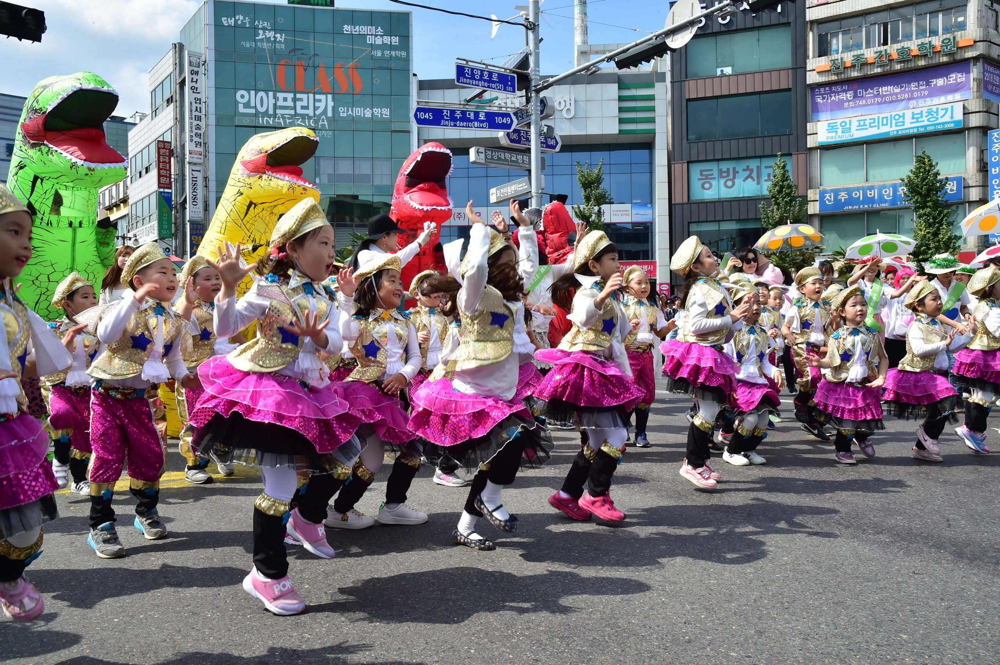
ⓒ천지일보
9. 교우 관계 상담 & 개방형 수장고의 관건
재훈: 전 정기적으로 만나서 미술 이야기하는 친구들은 있고 그 모임이 정기적으로 이루어질 만큼 안정적이어지긴 했는데요. 이제 개인 작업이나 제가 갖고 있는 내밀한 문제들 있잖아요. 그런 것들에 대해서는 음… 이걸 말을 어떻게 해야 되지. 그러니까 저는 예전에는 누구랑 무언가를 같이 하면 굉장히 많은 걸 같이 할 수 있을 줄 알았어요. 그런 기대를 항상 갖고 살았는데 현실에서 다른 사람이랑 프로젝트 같이 해보고 뭐도 같이 해보고 하니까 그게 안 되더라고요. 한 사람이랑은 굉장히 정해진 활동만 같이 할 수 있다는 걸 알게 됐어요. 그래서 이번에도 어떤 사람들과 모임을 꾸려서 계속 만나며 처음에는 ‘이 내용을 다른 사람들이랑 같이 이야기할 수 있구나’ 라는 기쁨과 환희가 있었지만, 그와 동시다발적으로 생성되는 외로움이 있더라고요.
정서영: 그 외로움은 계속될 거예요. 활동하다가 무슨 일 때문에 모여요. 그래서 무언가를 같이 만들어요. 그렇게 같은 교집합을 느끼면서 작업 혹은 활동을 하다가 당연히 노선이 달라져요. 그 노선이 달라질 때 그냥 부드럽게 헤어질 수도 있고, 격렬하게 싸우면서 헤어질 수도 있고, 다시는 안 볼 사이가 될 수도 있고, 가끔 보는 사이가 될 수도 있죠. 그렇게 헤어져서 가요.
너무 당연하게도, 사람들이 늘 같이 갈 순 없어요. 그 점을 그냥 평범하게 받아들이면 좋겠어요. 말하자면 내 인생 전체와 저 사람 인생 전체가 만난 게 아니라 어떤 부분과 부분이 만난 거잖아요. 그래서 그 부분이 시효를 다하면 헤어지는 게 당연한 거고, 생각이 달라지는 게 너무 당연한 거고. 재훈의 상황은 너무 당연하다고 생각해요. 물론 그럴 때 느끼는 씁쓸함이라든지, 아쉬움이라든지, 분노라든지… 이런 감정이 생기는 건 당연한 거고요. ‘그런 감정이 생기면 안 된다’는 뜻이 아니라 그 상황은 살면서 계속 될 거란 말이에요. 어떤 일을 함께 도모하면서 많은 걸 나누지만 또 어떤 순간에는 시간과 함께 변하면서, 더 이상 뭔가를 나눌 수 없는 상황이 될 수밖에 없기 때문이죠
그래서 커뮤니티가 길게 가는 경우 거의 없잖아요. 예술 커뮤니티들은 항상 깨지는 게 철칙이지 않아요? 물론 모두가 그렇지는 않고 길게 가는 경우들도 있지만, 사실 그렇게 하기가 무척 어렵죠. 예술계에서 커뮤니티가 오래 가는 경우는 강력한 리더가 있거나 각각의 분업화가 아주 잘 돼 있어서 서로의 역할이 부딪히지 않으면서 바퀴가 잘 굴러가는 특정한 경우인데 그런 게 아니라면 커뮤니티는 파할 수밖에 없어요. 누구를 만나서 정말로 이들과 많은 이야기를 나누고 끝까지 갈 수 있을 것 같다라고 생각하면 안 되는 게 사실은 거의 99%. 그리고 원래 사람은 사람한테 씁쓸함을 느끼면서 살아가는 거 아니겠어요. (웃음) 그렇지만 어떤 순간에 어떤 일을 함께 할 수 있었고 그것을 통해서 좋은 시간을 보냈으면 감사한 거죠. 진지한 모임을 많이 갖는 모양이에요?
재훈: 진지한 게 뭐죠?
정서영: 이야기하려고 많이 모인다면서요. 근데 지금 사람들을 모아놓고 전시에 대한 얘기를 제일 많이 안 하네요.
동현: 재훈님은 이번 전시 어떻게 봤어요?
재훈: 엄… 대개의 전시가 《공기를 두드려서》처럼 작품을 잘 보여주기 위해 그 작품의 자리를 찾아주는 일에 주력하잖아요. 작가님의 표현대로라면 작품이 딱 그 자리에 있음으로써 그 공간이 활성화될 수 있게 끔요. 저는 그걸 일종의 전투 태세라고 생각해요. 그랬을 때 《Of Hundred Carts and On》는 전투 태세를 제1 목표로 한 전시라기보다는, 창고죠. 사실 작품의 생애 중에서 그 전투 태세에 있는 순간은 무척 짧고 몇 번 올 수 있을지도 모르는 거잖아요. 그 사이 시간에는 어디에 보관되어 있는 거고요. 그리고 사실 어제 을지로에 갔다가 ‘개방형 수장고’라는 단어를 봤어요.
정서영: 오세훈 현 서울 시장이 뭔가를 벤치마킹해서 만든다고 기사에서 본 것 같아요. 어디더라?
동현: 네덜란드?
정서영: 맞아요. 맞아요. 그 기사를 봤어.
동현: 네덜란드에 무슨 수정궁같이 생긴 게 있는데,
정서영: 국현 청주도 개방형 수장고 아닌가?
동현: 맞아요, 그럼 거기도 타이틀을 ‘개방형 수장고'로 거는 건가..
재훈: 그런 줄은 몰랐네요. 제가 봤던 개방형 수장고는 하나뱅크의 개방형 수장고 ‘H. art1’ 이었어요. (웃음)
동현: 하나은행.
재훈: ‘여기서 내가 개방형 수장고라는 단어를 만나네.’ 그런 생각을 했는데요. 사진 자료로 봐본 ‘H. art1’이나 국현 청주관의 내부는 작품들이 보관을 위한 프레임 위에 한 방향만 바라본다거나 하는 식으로 일괄적이고 뉴트럴하게 놓여 있더라고요. 하지만 <러브 유어 디포>는 그렇지 않잖아요. 작가 본인이 개별 작품들과 맺었던 내밀한 관계가 작품 보관/배치 방식에 총동원됐으니까요. 그렇기 때문에 일반적인 전시처럼 아주 전투 태세도 아니고, 일반적인 수장고처럼 효율적인 보관만을 위하지도 않은 그런 창고를 보는 느낌이었어요. 작품들을 시시때때로 돌보는 분주하고 강단 있는 요정이 창고에 있는지 없는지가 차이점 같기도 하네요.
아, 그리고 이주요 작가가 어디선가 자신이 창고를 좋아하는 이유에 대해서 이야기하며 그런 말을 했었다. 자기는 전시에 있는 작품들 하나하나가 모두 중요하니까 ‘너는 그냥 보기만 하라고’ 주어진 것들만 봐야하는 룰이 별로였는데, 창고에는 엄청 다양한 것들이 많이 있어서 자기가 보고 싶은 거 골라볼 수 있어서 좋았다고. 그런 것처럼 저도 오늘 전시를 봤을 때는 이걸 보고, 저번 주에 봤을 때는 저걸 보고 하는 식으로 볼 때마다 다른 것들을 볼 수 있었어요.
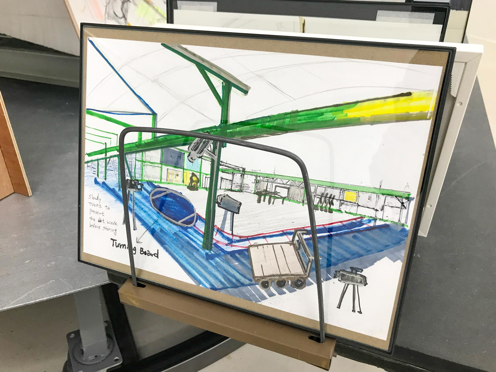
10. Frame
동현: 저는 드로잉 작업에 대해 얘기하며 정리를 해보고 싶어요. 실은 드로잉을 포괄하는 프레임에 관한 이야기인데요. 이번 전시를 보며 프레임에 대한 관점을 넓혀볼 수 있었어요. 단순히 단어 그대로 액자 혹은 구조물을 뜻하는 말이 아니라, 평면에서 입체로 나아가는 ‘다리’와 같은 프레임들을 볼 수 있었어요. KCCUK에서 했던 전시에서도 비슷한 생각을 했던 작품이 있었어요. 이주요의 <드로잉 테이블> 이었는데요. 폭포 절벽 위에서 아슬아슬하게 서핑을 하는 Artist가 그려진 드로잉과 이주요가 해외에서 거주하던 동네의 각종 담장 혹은 철망을 수집하듯 그린 ‘펜스’ 드로잉을 포함해 여러 장의 드로잉들이 놓여진 테이블이었어요. 이 테이블은 종류가 조금씩 다른 철근과 각목들이 각각 피스로 연결되어 서 있는 구조였는데요. 펜스와 폭포의 평면 속 형상이 구조물의 얼개와 연결되어, 테이블의 다리가 구조물로서 드로잉을 받치는 기능을 하는 동시에 드로잉의 내용을 물리적으로 확장하고 있었어요.

이번 《Of Hundred Carts and On》 전시에서도 드로잉을 위한 구조물을 보며 프레임에 대한 개념을 보다 넓은 시야에서 접근해 볼 수 있었어요. 예를 들어 전시장에 들어서면 <드로잉 걸이> 오른편에 드로잉 카트 <I'm sorry to be an artist>가 있었죠. 그 선반에 실린 드로잉 중에도 폭포 위 서핑을 하는 Artist 그림이 있었어요. 이 그림이 얇은 금속판 위 반복해서 등장하고, Fear라는 글씨가 금속판 위에 알루미늄으로 얇게 새겨져 있었거든요. 이 드로잉들이, 을지로에서 컷팅을 마치고 격자 구멍이 숭숭 뚫린 알루미늄판을 겹치고 접어서 만들어진 것 같은 프레임 사이사이에 자리를 잡고 놓여있더라고요. 그럼 저한테는 이 드로잉 속 내용과 형상들이 얇고 가는 선의 금속으로, 그리고 날카로운 소리를 낼 법한 휘청거리는 얇은 금속들의 겹침으로 확장되는 거에요. 그래서 작가가 프레임에 올라가거나, 프레임에 속하거나, 프레임과 함께 있을 내용과 형상을 어떻게 관계지었는가를 보는 것이 중요한 경험 중 하나였어요.
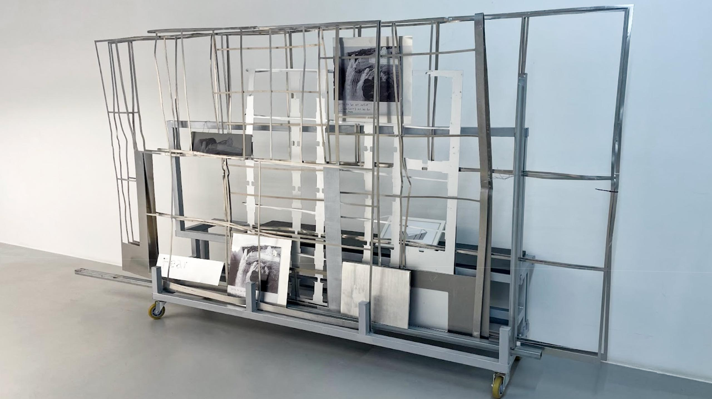 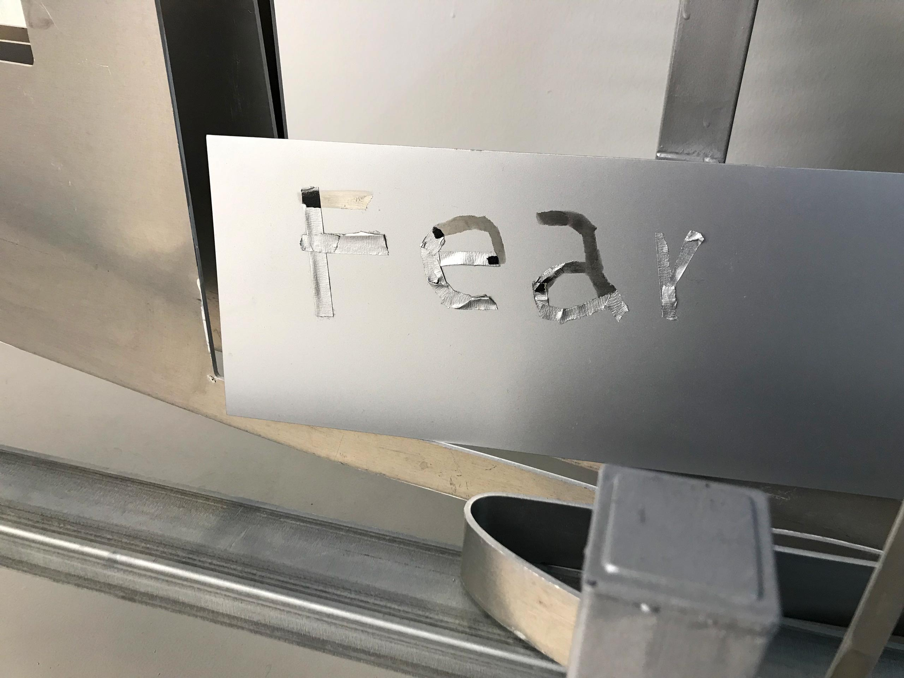 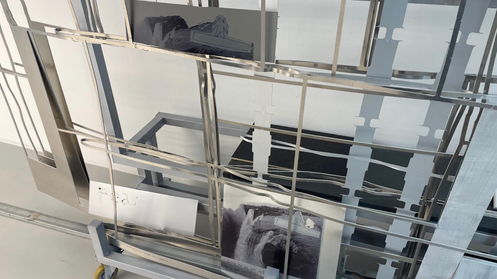
정서영: 이주요 작가의 작업들이 모여 있을 때, 대부분의 경우 그것이 견고하게 합체되는 게 아니라 꽤나 임시적으로 놓이면서 하나의 덩어리가 되곤 하잖아요. 그렇기 때문에 그 순간의 일시적인 장면이 다시 오기는 어려운 장면일 수도 있는 거고요. 더군다나 작가가 스스로 원하는 걸 찾을 때까지 작업을 매일같이 바꾸는 사람이기 때문에. (웃음)
드로잉 카트인 <I'm sorry to be an artist>는 프레임들로 이루어져 있어서 더 겹침이 많이 보이고 그랬나 봐요. 그렇죠? 그리고 또 구멍들이 많잖아요. 가늘고 구멍이 많은 데다가 임시적이기 때문에 행동의 흔적이 많이 보이고, 하나의 덩어리가 되기까지의 궤적이 축적된 게 보이고, 그렇게 조각이 되는 거죠.
또 《럽유디_강남 파빌리온》에 있던 껍질 외관이 없다 보니까 ‘디포’의 구조물들이 프레임으로 모여 있을 수 있는 것 같아요. 그때의 구조물들은 껍질 속에 있었기 때문에 구조라고 느끼기보다는 하나의 전체적인 몸체로서 느껴졌는데, 그 껍질 없이 보니까 프레임으로 보이기도 하네요. 《럽유디_MMCA》에서는 공간이 워낙 넓다 보니까 구조물들이 어떤 구조보다는 장소로, 하나하나의 스테이션처럼 보였었고요.
내가 예전에 들은 바로는 이번 전시에서 작가의 의도 중 하나는 구조 자체를 미학화하는 것이었거든요. 건축적 구조나 실질적으로 기능만 하는 구조라기보다는 이 구조 자체가 하나의 미적 대상 혹은 조각적 대상으로서 작동하기를 원한다고 들었어요.
재훈: 구조라는 것이 아까 말했었던 프레임들이 겹쳐 있었던 카트나 <드로잉 걸이>, <페인팅 플레이트> 같은 작품을 두고 말씀하시는 건가요?
정서영: 프레임을 포함한 전체를 말하는 거였어요. 예를 들어 <I'm sorry to be an artist> 같은 경우에도 겹쳐놓은 프레임들을 그냥 바닥에 세워놓은 것이 아니라 바퀴가 달린 카트에 실어놓은 거잖아요. 그런 구조물이요.
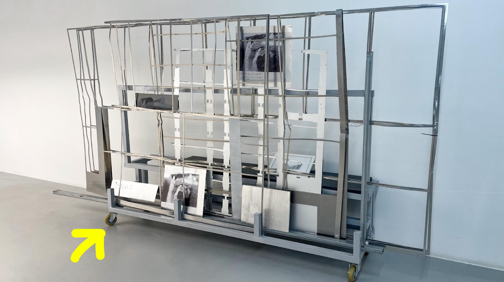
또 페인팅이나 드로잉과 함께 있는 구조들, 그다음 지하에 있는 여러 ‘디포’의 구조들, 또 선반들. 앞서 꺼낸 ‘구조’란 이런 것들을 통칭하는 말이었어요. 하여튼 그 구조물들을 미학화한다는 목표가 달성됐는지 확인하려면 작가와의 인터뷰를 해야지. 나랑 인터뷰를 하는 게 아니라.
동현: 아 재훈님께 물어보고 싶었던 게 있었어요. 전 ‘전시 보러 갈래?’ 컨텐츠를 그전까지 보고 왔는데도, 이 자리에 당연히 이주요 선생님도 오시겠단 생각을 하고 있었어요.
재훈: 진짜요?
동현: 왜냐면은 작가 인터뷰가 으레 그러니까, 작가가 참석하는 걸 당연하게 생각했던 것 같아요.
정서영: 작가 없이 이렇게 얘기하는 것도 재밌어요. 보통은 작가를 인터뷰하는데, 작가 없이 여럿이 모여서 이렇게 막 두런두런 얘기하는 것도 재밌죠.
동현: 그래서 제가 참여 제안이 왔을 때, 대답을 “그럼요. 좋죠. 주요 쌤이랑도 오랜만에 인사하겠네요.” 이렇게 대답을 했을 거예요. 그래서 궁금했어요. 작가 본인등판 없이 전시에 대해 이야기하는 프로그램을 기획한 이유에 대해서요.
재훈: 지난 회차에서 제가 이 컨텐츠를 ‘뒷담화를 공적으로 하는 자리'라고 말했던 게 기억이 나는데요. 저는 일식집에서 일을 하는데 사장님이 가끔씩 인상적인 말씀을 하시거든요? 그 중 하나가 손님들의 뒷담화를 귀담아 들어야 한다는 거였어요. 요식업계 같은 경우 리뷰 창을 통해 피드백이 오긴 하지만 정말 진솔한 피드백은 뒷담화에서 얻을 수 있다고. 미술계의 경우도 크게 다르지 않다고 생각해요.
공적인 지면에 글을 쓸 수 있는 사람들은 지면의 성격이나 분량, 체면 때문에 제한되게 말할 수밖에 없다고 느끼는데요. 그마저도 주어지지 않은 사람들은 굳이 나서서 의견을 피력하지는 않는 분위기잖아요. 그렇게 한국 미술계의 모든 중요한 이야기는 대개 지인들끼리의 사적인 대화에서 이뤄진다고 생각하기 때문에 작가 본인에게 이 전시에서 뭘하고 싶었는지 문답하는 작가 인터뷰는 제가 자처해서 할 일은 아니라고 판단했어요.
그리고 사적인 답변을 하자면.. 그냥 정서영 작가님 만나고 싶어서... ‘전시 보고 이야기 나눠요~’ 하며 유혹한 거죠. (방긋)
정서영: 이 프로젝트 자체가 작가 없이 하는 리뷰니까요. 근데 어떤 경우엔 나에게 정보가 없기도 하잖아요. 자세한 정보가 없는 부분들이 있기 때문에, 당연히 잘 모르는 부분도 있고 오해가 많을 수도 있겠다 싶었어요. 예를 들어 구조에 대한 얘기도 아까처럼 작가가 뭘 원했는가를 못 들었으면 또 다르게 생각했을 부분도 있을 거고요. 하지만 뭐, 어느 전시나 보러 가면은 당연히 그런 상태에서 가는 거니까요. ‘그냥 그렇겠거니’ 생각했어요.
그리고 그 ‘구조 자체를 심미적 대상으로 삼고자 한다’ 라는 얘기를 들었지만, 그 부분에 대해서 성공적으로 느끼는지 물어보지 못했어요. 아직 너무 바쁘고 지쳐 있었을 테니. ‘바라캇의 작품들을 볼 때 육중한 쇠가 많이 보이지 않나요? 왜 그럴까, 그전에 딴 데서 봤을 때는 그런 무게를 못 느꼈는데...’ 아까 그런 얘기를 했었잖아요. 근데 그런 점들이 ‘구조를 심미적 대상으로 간주하는 강도가 세지면서 그렇게 된 걸까?’ 하는 생각이 들어요. 이런 건 사실 이주요 작가랑 나눠봐야 아는 얘기겠죠.
재훈: 전시를 맨 처음에 보러 갔을 때 <드로잉 걸이>에 드로잉들이 엄청 많이 걸려 있었는데 이번에 갔을 때는 드로잉이 많이 빠져 있더라고요. 그걸 보고 <드로잉 걸이>의 구조 자체에 눈이 가면서 드로잉하는 사람이나 드로잉을 많이 갖고 있는 사람은 여기에 다른 드로잉들을 걸어보고 싶겠다는 생각이 들었어요. 이런 점을 생각해보면 작가가 작품들을 창의적으로 관리할 수 있는 템플릿을 보급하는 데도 관심이 있다고는 느껴져요.
정서영: 이제 작가도 디포에 대한 경험치가 쌓였기 때문에 만약 ‘개방형 수장고’가 중요해진다면 심미적 ‘디포’가 의미를 넓힐 수 있겠죠. 아무튼 그 점에 대해서는 아직 얘기를 못 해봤어요. 구조를 심미적 대상으로 충분히 간주했다고 느끼는지. 하여튼 굉장히 많은 난관과 딜레마를 극복하고 다루면서 만들어진 전시고, 그렇게 생긴 결과의 보고서에 대해 생각할 겨를이 있었는지는 잘 모르겠는데 어느새 또 해체 준비를 해야 하네요.
하여튼 그 구조물을 만든다는 물리적인 어려움과 작품 하나하나를 보고 겹겹이 쌓았던 시간 같은 것들이 모두 덮치고, 섞이고, 뒤섞여서 혼돈스러운 시간이 작가에게 있었을 거라고 생각해요. 그렇기 때문에 이 전시는 멀리서 보면 그 열기를 뿜뿜 뿜는 것 같아 보입니다.
이 정도면 되지 않았을까요?
재훈: 네! 그럼 이렇게 대화를 마무리하겠습니다.
.
.
.
.
.
.
.
.
.
.
.
.
.
.
.
.
.
.
.
.
.
.
.
.
.
.
.
.
.
.
.
.
.
.
.
.
.
.
.
.
.
.
.
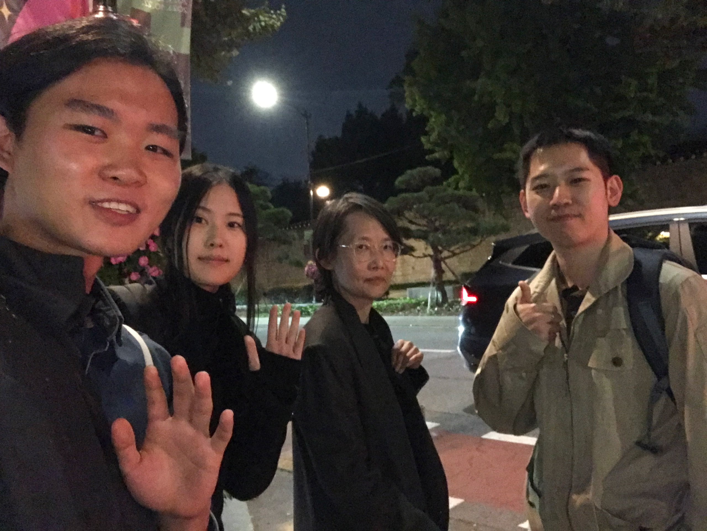